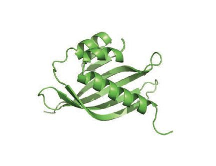

Artificial intelligence methods for protein folding and design
Protein folding and structure prediction
The grand challenge of the protein folding problem encompasses three pillars: predicting the structure from sequence, quantifying the interatomic forces holding a single metastable state of a protein, and characterizing the folding landscape [1].
Determining the three-dimensional (3D) structures of proteins is crucial for understanding their functions and the molecular basis of diseases. Despite extensive efforts that led to the experimental determination of approximately 87k (by the end of 2024, 90% sequence identity threshold) structures [2] of unique proteins; this number represents only a small fraction of the 718 million (2024.04 MGnify release, 90% sequence identity threshold) known protein sequences [3]. Experimentally determining protein structure is laborious and time-consuming, often taking months to years, which has motivated the development of computational methods to predict protein structures (Figure 1a).
Understanding the interatomic forces at the metastable state of proteins is important for analyzing the structural effect of mutations and post-translational modifications (PTMs), rationally engineering proteins for targeted functions, and designing drugs (Figure 1b). As we will explain later in this review, being able to predict structures based on the sequence does not necessarily imply a complete understanding of the physics underlying protein structure.
Moreover, proteins are dynamic; their conformational flexibility enables functions such as enzyme catalysis, molecular transport, and signal transduction. Protein structure prediction tools are usually trained on experimentally resolved structures, which are skewed toward proteins that form homogeneous, stable, wellfolded conformations. X-ray crystallography requires ordered packing of proteins, while solving structures with electron microscopy often involves averaging many particle images, making it challenging to obtain high-quality structures for flexible regions or proteins with heterogeneous conformations. Nuclear magnetic resonance (NMR) spectroscopy provides some multistate ensembles but is limited to proteins that are relatively small and highly soluble. Consequently, structure prediction tools trained on these databases are biased toward well-folded proteins with a distinct stable state. However, many proteins transition between multiple conformations to function; thus, characterizing the entire conformational landscape is essential for understanding molecular mechanisms, designing proteins with controllable behaviors, and developing targeted therapies (Figure 1c).
Advances in machine learning approaches for sequence to structure prediction
Recent advances in machine learning methods (Figure 2) have revolutionized protein structure prediction by enabling end-to-end training from amino acid sequences to 3D structures with atomic-level accuracy. Building on traditional statistical methods for protein structure prediction, these deep learning models leverage evolutionary couplings (i.e. coevolution) between residues of a protein to facilitate structure prediction (Figure 1d). To address the computational infeasibility of searching over all possible structures to identify the lowest energy state, these deep learning approaches have focused on extracting structurally relevant coevolution from protein sequences to constrain the search space, [4] then trans-forming this information into 3D atomistic predictions.
The first structure prediction models to achieve experimental-level accuracy, AlphaFold2 (AF2) and RoseTTA-Fold, learned to extract these structure-related evolutionary signals directly from MSAs. In AF2, the Evoformer block computes pairwise relationships between columns of the MSA to update a pairwise representation, and then uses this updated pairwise representation to refine the MSA representation. Through this iterative process, AF2 computes an initial Current Opinion in Structural Biology The protein folding problem. The protein folding problem has three different aspects: (a) Predicting protein structure from sequence. (b) Understanding the interatomic forces at the metastable state of proteins. Here, we show an example of how phosphorylation could change the conformation of a protein. These are structures of non-phosphorylated (PDB ID: 2N05) vs phosphorylated (PDB ID: 2N04) N-terminal region of human cysteine string protein. (c) Characterizing the conformational landscape. (d) Overview of the two main pillars of protein structure prediction methods which infer structure using either MSAs (e.g. AF2) or single sequence (ESMFold). For models like AF2, an MSA is constructed to offer the model evolutionary information, while in pLMbased methods such information is learned by training the model on sequence data (e.g. via training on masked protein sequences in ESMFold, M = masked residue). (e) Current structure prediction methods are able to solve only structures with abundant evolutionary information or those which have low complexity. PDB, Protein Data Bank. AF2 RoseTTAFold ProteinMPNN ESMFold RFAA AF3 RSO starting point for the structure module, and uses the sequence and pairwise representations to predict 3D atomic structures. AF2 demonstrated its experimental-level accuracy at the 14th Critical Assessment of Protein Structure Prediction (CASP) competition, achieving a median-domain global distance test total score (GDT_TS) of 92.4. [7]. Recent models, such as RoseT-TAFold All-Atom [8] and AlphaFold3 (AF3) [9], extend this framework to predict structural interactions for a broader range of biomolecules, including proteins, nucleic acids, small molecules, ions, and covalent modifications of amino acids.
Another class of structure prediction models bypasses the need to build MSAs by storing evolutionary information in the parameters of a protein language model (pLM) (Figure 1d). pLMs are trained to predict the amino acid identities of masked and mutated positions in protein sequences, requiring them to learn, store, and extract evolutionary informationdincluding pairwise dependenciesdfrom an amino acid sequence. Models such as OmegaFold [10], RGN2 [11], and ESMFold [12] leverage this capability, substituting the MSA representation with a single-sequence representation derived from a pLM that encodes the necessary pairwise information for structure prediction. By circumventing the need to precompute MSAs, pLMs accelerate and simplify structure prediction, particularly for proteins where constructing MSAs remains challenging. However, because pLMs encode evolutionary information in their parameters, they require orders of magnitude more parameters than MSA models. While AF2 achieves state-of-the-art performance with only 93M parameters [5], the pLM portion of ESM-2 alone requires 3Be15B parameters [12] to approach AF2-level accuracy.
Limitations of current structure prediction approaches
While this paradigm of extracting coevolutionary relationships and trans-forming them into 3D structures has greatly enhanced our ability to predict a protein's structure from its sequence, it also fundamentally restricts the capacity of current models to learn the broader sequence-to-structure relationship.
As a result of their reliance on evolutionary information, models struggle to accurately predict the structures of proteins that lack homologous sequences. This limitation suggests that structure prediction models have not learned the physical laws that govern protein folding. Furthermore, these models often fail to accurately reflect the impact of mutations on structural predictions [14]. They also frequently generate erroneous structures with exposed hydrophobic patches for protein isoforms [15], underscoring their limited understanding of fundamental physicochemical principles.
The Levinthal paradox posits that a typical protein has approximately 10 300 possible conformations, yet proteins fold spontaneously within milliseconds [16]. We speculate that the evolutionary and coevolutionary information derived from MSA inputs or that learned by pLMs drastically constrains the conformational space the model needs to search. This constraint effectively provides a "shortcut' to structure prediction without necessitating a deep understanding of the complex protein folding landscape. These models may not capture the underlying physics of protein folding but rather exploit patterns in existing data.
Some might argue that models like AF2 can predict the structures of de novo designed proteins without evolutionary information. However, these cases typically involve simple proteins with three common characteristics (Figure 1e). First, they are usually short, limiting the search space of potential conformations. Second, they frequently have simple folds in which residues close in the 3D space are close in the sequence, and they often do not require chaperone proteins for the folding process. Third, their sequences have unambiguous secondary structure propensities that can be easily learned through pattern matching during training, whereas complex natural proteins often contain segments that can adopt different conformations in varying environmental or structural contexts [1,17]. pLM-based methods, such as ESM-2, have been shown to make predictions based on pairing interacting segments [15]. This suggests that while models may infer structures for small proteins through the local pairing of segments, predicting structures for more complex proteins remains challenging due to the vast conformational space involved.
Researchers have demonstrated intriguing preliminary results showing AF3's ability to predict protein structures when lipids and nucleic acids are present [18]. Considering that there is no coevolutionary information explicitly provided for the interaction between these nonprotein molecules and protein, these findings raise an exciting possibility. However, AF3's lack of underlying physical understanding remains evident, manifested through issues like incorrect chirality, steric clashes, misfolding of unstructured regions as helices, and difficulty capturing global interactions in large, complex proteins [9]. Additionally, the ligand and post-translational modification datasets are not filtered by homology due to limited diversity, raising training set leakage concerns.
Limitations in their ability to predict protein structures without evolutionary information and the prevalence of physically impossible errors, such as steric clashes, suggest that structure prediction models have significant potential for improvement in their understanding of the physics governing protein structures.
Moreover, current tools still fall short in accounting for key environmental factors such as pH, temperature, and solvent composition, despite their critical influence on protein folding landscapes and biological functions. Experimental studies and molecular simulations on ubiquitin [ 21 ], DNGR-1 receptor [ 22 ], bovine serum albumin [ 23 ], and influenza virus hemagglutinin protein [ 24 , 25 ] have demonstrated that changes in these conditions can significantly alter both structural and dynamic properties. However, the Protein Data Bank (PDB) database contains limited structural data collected under diverse environmental conditions, and current prediction models are typically trained without labels specifying these variables.
Addressing this limitation is inherently challenging; nevertheless, several strategies have been explored to mitigate these issues. 1. Integration of experimental physical constraints: incorporating experimental data, such as small-angle X-ray scattering [19] and chemical crosslinking [20], has demonstrated effectiveness in guiding structural predictions. 2. Expanding experimental structural databases: increasing the quantity and diversity of experimentally resolved structures, particularly in those determined in complex biological contexts involving diverse binding partners.
Efforts to capture conformational landscapes of protein structures
A study suggested that AF2 can predict folding inter-mediate states, hinting at an implicit understanding of protein folding pathways [26]. However, there is limited quantitative comparison between these predictions and results from molecular simulations or experiments. The observed 'local first, global later' behavior of AF2 [27] when run at single-sequence mode might simply result from the model's tendency to predict structures based on pairing fragments, rather than reflecting a true comprehension of folding dynamics.
Atomistic molecular simulation is a powerful tool for understanding protein folding and conformational changes [28,29]. However, simulating these processesdwhich occur over hundreds of microseconds to millisecondsdrequires significant computation resources, making unbiased atomistic simulations challenging for larger proteins. Machine learning methods have been used for the analysis and simulation of molecular dynamic trajectories [30]. In recent years, researchers have explored generative models of Boltzmann distributions [31], but these models struggle to scale beyond small molecules. The application of diffusion models to structure prediction, exemplified by Alpha-Flow [32], has shown promising results in generating protein ensembles; however, these approaches primarily capture molecular dynamics on the nanosecond timescale. Distributional Graphormer [33] and BioEmu [34] are two recently proposed methods that aim to go furtherdsampling conformational changes over a longer timescale and emulating the energy landscape of millisecond-timescale simulations. This represents an exciting step forward in modeling protein dynamics. However, despite their potential, these methods appear to be constrained by the bias in the PDB structure database and the limitations of available molecular simulation data. For instance, both studies represent the adenylate kinase as a success case and accurately model its two conformational states, yet they predict the 'closed' state as the dominant conformation in the absence of ligand, even though experimental evidence shows that under such condition, adenylate kinase pre-dominantly exists in the open state [35]. This discrepancy reflects a broader challenge in the field: machine learning approaches for conformational landscape prediction need to be benchmarked against established experimental data to ensure biological relevance. As the field continues to evolve, more systematic integration of experimental benchmarks will be critical to realizing the full potential of these innovative methods.
The integration of experimental and computational methods holds immense potential for deepening our understanding of protein folding landscapes. For example, cryoDRGN [36] has successfully reconstructed heterogeneous cryogenic electron microscopy (cryo-EM) structures. NMR has been utilized to study fold-switch proteins [37], conformational states of kinases [38], and folding modulation by the ribosome [39].
Broad applications of structure prediction models
Despite these limitations, structure prediction models have been successfully applied to problems beyond structure prediction. Most prominently, these models have been repurposed as generative models for protein design. For example, RFdiffusion [40] fine-tuned the existing structure prediction model to learn the distribution of protein structures. Another approach is to directly exploit the learned structural space using hallucination methods to backpropagate structural losses, for example, relaxed sequence optimization has been successfully used to design single-chain proteins up to 1000 amino acids, with the resulting structures validated by cryo-EM [41]. These models can generate structures either unconditionally or conditioned on some input motifs.
Protein design and inverse folding
The terms 'inverse folding' and 'structure-based sequence design' are often used interchangeably in recent literature. However, we argue that this usage conflates two conceptually distinct problems. In this review, we define structure-based sequence design as the task of generating sequences that are compatible with a given structuredtypically by maximizing the likelihood P(sequence|structure). In contrast, we reserve the term inverse folding for the more stringent biophysical formulation: identifying a sequence that (i) uniquely folds into the target 3D structure as its lowest accessible energy conformation and (ii) does not adopt any alternative conformations of comparable free energy (Figure 3a) [42,43]. This distinction is important for interpreting what current models are optimizing and what remains to be addressed in future work.

Many recent models that take a structure as input and generate a compatible sequence have been described as 'inverse folding' models. These include notable examples such as ProteinMPNN [44] and ESM-IF [45], which are trained on structural databases like the PDB [46] and the AlphaFold Protein Structure Database (AFDB) [47]. These models encode the 3D coordinates of a protein into a graph and decode the amino acid identity at each position (Figure 3b(i)). They have demonstrated strong experimental performance in designing monomers (e.g. TIM barrel), binders (e.g. cellular receptor CD45, allergen Der f7), and oligomers (e.g. icosahedra, tetrahedral nanoparticles) [40,48,49].
Despite their success, these models do not solve the inverse folding problem in the strict sense. Instead, they perform structure-based sequence design by optimizing P(sequence|structure), without considering the full ensemble of possible alternative structures, that is, even if a generated sequence is compatible with the input structure, it may still fold into an alternative structure with lower energy. To truly address inverse folding, one would need to guarantee that the designed sequence adopts the target structure as its unique, lowest-energy Current Opinion in Structural Biology
The inverse folding problem and sequence design. The inverse folding problem describes the problem of (a) designing a sequence that has the target structure as the unique and accessible lowest energy conformation, i.e. the top route where the designed sequence has the target structure (red asterisk) as the lowest energy conformation. The problem of (b) sequence design could take the route of (i) structure-based sequence design, where a neural network takes a structure as input and outputs a sequence, or (ii) structure-agnostic sequence design, where a neural network samples a sequence without explicitly modeling structures. PDB, Protein Data Bank.
conformation, without any competing folds (Figure 3a). This remains an open and challenging problem in the field.
Current designability test and its limitations
De novo protein design generally requires generating and screening a large set of candidate sequences. In order to confirm that the designed sequence folds into the desired structure and reduce the number of sequences to experimentally validate, in silico designability test can be conducted. Current studies primarily use AF2 single-sequence self-consistency metrics to evaluate whether a sequence may fold into the target structure [50]. The designed sequence is passed to a structure prediction model in single-sequence prediction mode, e.g. AF2 without any MSA or template, OmegaFold, and ESMFold. Then the predicted structure is compared to the target structure using root mean square deviation (RMSD) and template modeling score (TM-score); other prediction confidence metrics may also be considered, e.g. predicted local distance difference test, predicted template modeling score (pTM), and predicted aligned error (PAE). In different design tasks, these self-consistency metrics are applied to sites of interest, e.g. motif-in-motif scaffolding and binding interface in binder design [50,51,40,52].
Despite the widespread adoption of these metrics, their efficacy as a general evaluation metric is complicated by their inability to validate natural sequences. The ProteinMPNN study found that the majority of natural and redesigned sequences do not refold accurately with AlphaFold single sequence mode [44]. Furthermore, self-consistency for de novo designs generally decreases sharply for designs larger than 300 residues, likely due to their greater structural complexity and the larger search space of possible structures.
Therefore, the aforementioned limitations of structure prediction models complicate their reliability in assessing the quality of designs. As protein design efforts move towards functional enzyme design, in silico designability methods are needed to handle the increasingly complex sequences-structure relationships required to engineer these proteins.
Evaluating generative models: novelty, diversity, and complexity
Comprehensive evaluation of protein generative models requires three complementary metrics that capture different aspects of design quality: structural novelty, diversity, and complexity.
Structural novelty quantifies whether generated proteins extend beyond the existing repertoire of natural protein structures. This is typically assessed by comparing designed proteins to natural proteins using sequence identity and structural similarity metrics such as TM-score. Interestingly, structure generative models have been shown to frequently permute natural protein fragments or domains to generate structures. Thus, current novelty metrics fall short of distinguishing between novel protein domains and recombined natural fragments.
While novelty compares designs with natural proteins, diversity measures the structural variation among the generated proteins themselves, commonly evaluated through clustering analyses of the designed structures.
To complement novelty and diversity metrics, we propose protein complexity as an important consideration for de novo proteins. Unlike natural proteins, which often exhibit domains that are discontinuous in sequence space [53,54], designed proteins typically maintain strong correspondence between sequence-level and structure-level proximity -regions adjacent in the amino acid sequence remain adjacent in the folded structure. This sequential correspondence suggests that current generative models may not fully capture the architectural sophistication found in nature.
To quantify complexity, non-local contact density can be assessed using metrics such as contact order [55] or long-range contact ratios, which measure the frequency of interactions between residues distant in primary sequence. Moreover, intermodular connectivity [53,54] e the extent to which different domains or motifs interact e can be analyzed to quantify the interdependencies that define higher-order protein architectures.
Measuring novelty, diversity, and complexity of designs will help refine the protein design process and guide the development of more sophisticated generative models that unlock broad areas of the sequence-structurefunction space.
Sequence-only models
Sequence-only design models (Figure 3b[ii]) offer an alternative approach that liberates protein design from structural constraints. Many proteins do not fold into static structures, and their functions are not mediated by stable conformations. Intrinsically disordered regions represent the most extreme examples of this, where biological activity emerges from sequence properties rather than static structure [1,56]. By focusing directly on sequence optimization, this approach can design functional proteins without needing to solve the complex inverse folding challenge. These models, including EvoDiff [56], Progen2/3 [57,58], and Raygun [59], employ self-supervised masked language modeling trained on evolutionary-scale sequence datasets. At inference, they sample from learned distributions of sequence space and can be conditioned on natural proteins to optimize them for certain desired characteristics. However, sequence design models exhibit limitations similar to those observed in structure generative models. Analysis reveals that these models frequently combine protein fragments to form chimeras within natural protein families. Rather than expanding into novel areas of sequence-function space, they appear to treat proteins as collections of modular subunits drawn from existing family members. This finding underscores the need for new approaches aimed at sampling entirely novel sequences that perform desired functions.
Conclusion and outlook
Recent advances in machine learning for protein structure prediction and de novo protein design have revolutionized the field. Breakthroughs such as AF2 [5] and ESMFold [12] now enable atomic-level accuracy in structure prediction by leveraging evolutionary information embedded in the vast and rapidly growing repertoire of natural sequences. Beyond single-chain structure prediction, adaptations of these models have shown promising performance in multimeric structure prediction [60] and variant-effect prediction [61,59]. Adaptations into generative models are significantly accelerating capabilities in de novo protein design. Furthermore, structure-conditioned sequence design models have made substantial progress toward inverse folding, enabling the design of stable, soluble sequences that reliably fold into a given backbone or specified conformations. Important advancements in designing multiple conformations include fold switchers that have different stable conformations that may be biased by external conditions [61e64] and enzymes, which transition between different conformations to catalyze a reaction [65].
As the field continues to break ground, progressing toward comprehensively solving the protein folding and inverse folding problems could transform our understanding of disease mechanisms and dramatically expand capabilities for drug and enzyme design. While current efforts often approach these challenges independently, both are fundamentally governed by a common objective: characterizing the energy landscape associated with specific amino acid sequences and their environments. Indeed, a unified model would be capable of both predicting folding pathways and transitions between thermodynamically stable conformations while also identifying the amino acid sequence best suited for a desired energy landscape. Notably, studies have revealed that the learned potentials of structure prediction models recapitulate energy functions, providing insights into the ways through which future efforts may continue to advance toward models that learn the physical principles governing protein structure and function.
During the preparation of this work the authors used ChatGPT and Claude in order to improve clarity and succinctness. After using this tool/service, the authors reviewed and edited the content as needed and take full responsibility for the content of the publication.
41 * * . Frank C, Khoshouei A, Fu b L, Schiwietz D, Putz D, Weber L, Zhao Z, Hattori M, Feng S, de Stigter Y, Ovchinnikov S, Dietz H: Scalable protein design using optimization in a relaxed sequence space . Science 2024, 386 :439 – 445. https://www.science.org/doi/pdf/10. 1126/science.adq1741 . doi:10.1126/science.adq1741. Most protein design methods are diffusion-based generative methods. This work proposes a ‘ hallucination ’ -based protein design approach that functions in relaxed sequence space. It achieved successful design of single-chain proteins with 1000 amino acids, which is challenging for other methods.
ESMFold is based on language models of protein sequences. As the language model part scaled up to 15 billion parameters, it achieved more and more accurate protein structure prediction. It is an order-ofmagnitude faster than previous MSA-based structure prediction models. 13 * * . Ding F, Steinhardt J: Protein language models are biased by unequal sequence sampling across the tree of life. Mar. 2024, https://doi.org/10.1101/2024.03.07.584001. pLMs have been applied to study diseases and design new proteins, often using sequence likelihood as an indicator of protein fitness. However, this study reveals that pLM likelihoods inadvertently reflect a species-specific bias.
14. Buel GR, Walters KJ: Can AlphaFold2 predict the impact of missense mutations on structure? Nat Struct Mol Biol 2022, 29:1-2, 15 *
39. Streit JO, Bukvin IV, Chan SHS, Bashir S, Woodburn LF, Włodarski T, Figueiredo AM, Jurkeviciute G, Sidhu HK, Hornby CR, Waudby CA, Cabrita LD, Cassaignau AME, Christodoulou J: The ribosome lowers the entropic penalty of protein folding. Nature 2024, 633:232-239, 40 * * . Watson JL, Juergens D, Bennett NR, Trippe BL, Yim J, Eisenach HE, Ahern W, Borst AJ, Ragotte RJ, Milles LF, Wicky BIM, Hanikel N, Pellock SJ, Courbet A, Sheffler W, Wang J, Venkatesh P, Sappington I, Torres SV, Lauko A, De Bortoli V, Mathieu E, Ovchinnikov S, Barzilay R, Jaakkola TS, DiMaio F, Baek M, Baker D: De novo design of protein structure and function with RFdiffusion. Nature 2023, 620:1089-1100. The authors developed a generative model for protein backbones. This model excels in design tasks, including unconditional and topologyconstrained protein monomer design, protein binder design, symmetric oligomer design, enzyme active site scaffolding and symmetric motif scaffolding. 41 * *
References
- Dill K, Ozkan S, Shell M, Weikl T. The protein folding problem. Annu Rev Biophys 2008. doi:10.1146/annurev.biophys.37.092707.153558
- Richardson L, Allen B, Baldi G, Beracochea M, Bileschi M, Burdett T, Burgin J, Caballero-Pérez J et al. MGnify: the microbiome sequence data analysis resource in 2023. Nucleic Acids Res 2023
- Roney J, Ovchinnikov S. State-of-the-Art estimation of protein model accuracy using AlphaFold. Phys Rev Lett. doi:10.1103/PhysRevLett.129.238101
- Jumper J, Evans R, Pritzel A, Green T, Figurnov M, Ronneberger O, Tunyasuvunakool K, Bates R et al. Highly accurate protein structure prediction with AlphaFold. Nature 2021. doi:10.1038/s41586-021-03819-2
- Baek M, Dimaio F, Anishchenko I, Dauparas J, Ovchinnikov S, Lee G, Wang J, Cong Q et al. Accurate prediction of protein structures and interactions using a three-track neural network. Science 2021. doi:10.1126/science.abj8754
- Jumper J, Evans R, Pritzel A, Green T, Figurnov M, Ronneberger O, Tunyasuvunakool K, Bates R et al. doi:10.1002/prot.26257
- Krishna R, Wang J, Ahern W, Sturmfels P, Venkatesh P, Kalvet I, Lee G, Morey-Burrows F et al. Generalized biomolecular modeling and design with RoseTTAFold All-Atom. Science 2024. doi:10.1126/science.adl2528
- Abramson *, Adler J, Dunger J, Evans J, Green R, Pritzel T, Ronneberger A, Willmore O et al. Accurate structure prediction of biomolecular interactions with AlphaFold 3. Nature 2024. doi:10.1038/s41586-024-07487-w
- Zwanzig R, Szabo A, Bagchi B. Levinthal's paradox. Proc Natl Acad Sci 1992. doi:10.1073/pnas.89.1.20
- Li W, Kinch L, Karplus P, Grishin N. ChSeq: a database of chameleon sequences. Protein Sci : A Publication of the Protein Society 2015. doi:10.1002/pro.2689
- Chinnam N, Syed A, Hura G, Hammel M, Tainer J, Tsutakawa S. Applying small angle X-ray scattering (SAXS) to protein structure predictions to characterize conformations in solution. Methods Enzymol 2023. doi:10.1016/bs.mie.2022.09.023
- Stahl K, Graziadei A, Dau T, Brock O, Rappsilber J. Protein structure prediction with in-cell photo-crosslinking mass spectrometry and deep learning. Nat Biotechnol 2023. doi:10.1038/s41587-023-01704-z
- Kony D, Hünenberger P, Van Gunsteren W. Molecular dynamics simulations of the native and partially folded states of ubiquitin: influence of methanol cosolvent, pH, and temperature on the protein structure and dynamics. Protein Sci 2007. doi:10.1110/ps.062323407
- Han C P, Schulz O, Fischbach H, Martin S, Kjær S, Reis E, Sousa C. A ph -and ionic strength-dependent conformational change in the neck region regulates dngr -1 function in dendritic cells. EMBO J 2016. doi:10.15252/embj.201694695
- Molodenskiy D, Shirshin E, Tikhonova T, Gruzinov A, Peters G, Spinozzi F. Thermally induced conformational changes and protein-protein interactions of bovine serum albumin in aqueous solution under different pH and ionic strengths as revealed by SAXS measurements. Phys Chem Chem Phys 2017. doi:10.1039/C6CP08809K
- Stevens J, Blixt O, Tumpey T, Taubenberger J, Paulson J, Wilson I. Structure and receptor specificity of the hemagglutinin from an H5N1 influenza virus. Science 2006. doi:10.1126/science.1124513
- Mair C, Ludwig K, Herrmann A, Sieben C. Receptor binding and pH stability -how influenza A virus hemagglutinin affects host-specific virus infection. Biochim Biophys Acta 2014. doi:10.1016/j.bbamem.2013.10.004
- Chang L, Perez A. 2024. doi:10.1101/2024.08.25.609581
- Ahdritz G, Bouatta N, Floristean C, Kadyan S, Xia Q, Gerecke W, Donnell O, Berenberg T et al. 2023. doi:10.1101/2022.11.20.517210
- Lindorff-Larsen K, Piana S, Dror R, Shaw D. How fast-folding proteins fold. Science 2011. doi:10.1126/science.1208351
- Shaw D, Maragakis P, Lindorff-Larsen K, Piana S, Dror R, Eastwood M, Bank J, Jumper J et al. Atomic-level characterization of the structural dynamics of proteins. Science 2010. doi:10.1126/science.1187409
- Noé F, Tkatchenko A, Müller K, Clementi C. Machine learning for molecular simulation. Annu Rev Phys Chem 2020. doi:10.1146/annurev-physchem-042018-052331
- Noé F, Olsson S, Köhler J, Wu H. Boltzmann generators: sampling equilibrium states of many-body systems with deep learning. Science 2019. doi:10.1126/science.aaw1147
- Jing B, Berger B, Jaakkola T
- Zheng S, He J, Liu C, Shi Y, Lu Z, Feng W, Ju F, Wang J et al. Predicting equilibrium distributions for molecular systems with deep learning. Nat Mach Intell 2024. doi:10.1038/s42256-024-00837-3
- Lewis S, Hempel T, Jiménez-Luna J, Gastegger M, Xie Y, Foong A, Satorras V, Abdin O et al. 2025. doi:10.1101/2024.12.05.626885
- Sinev M, Sineva E, Ittah V, Haas E. Domain closure in adenylate kinase. Biochemistry 1996. doi:10.1021/bi952687j
- Zhong E, Bepler T, Berger B, Davis J. CryoDRGN: reconstruction of heterogeneous cryo-EM structures using neural networks. Nat Methods 2021. doi:10.1038/s41592-020-01049-4
- Pabo C. Molecular technology: designing proteins and peptides. Nature 1983. doi:10.1038/301200a0
- Yue K, Dill K. Inverse protein folding problem: designing polymer sequences. Proc. Natl. Acad. Sci. U.S.A 1992
- Dauparas J, Anishchenko I, Bennett N, Bai H, Ragotte R, Milles L, Wicky B, Courbet A et al. Robust deep learning-based protein sequence design using ProteinMPNN. Science 2022
- Hsu C, Verkuil R, Liu J, Lin Z, Hie B, Sercu T, Lerer A, Rives A. Learning inverse folding from millions of predicted structures
- Berman H, Westbrook J, Feng Z, Gilliland G, Bhat T, Weissig H, Shindyalov I, Bourne P. The protein data bank. Nucleic Acids Res 2000
- Varadi M, Anyango S, Deshpande M, Nair S, Natassia C, Yordanova G, Yuan D, Stroe O et al. AlphaFold Protein Structure Database: massively expanding the structural coverage of protein-sequence space with high-accuracy models. Nucleic Acids Res 2022
- De Haas R, Brunette N, Goodson A, Dauparas J, Yi S, Yang E, Dowling Q, Nguyen H et al. Rapid and automated design of two-component protein nanomaterials using ProteinMPNN. Proc Natl Acad Sci 2024
- Pacesa M, Nickel L, Schellhaas C, Schmidt J, Pyatova E, Kissling L, Barendse P, Choudhury J et al. 2024. doi:10.1101/2024.09.30.615802
- Trippe B, Yim J, Tischer D, Baker D, Broderick T, Barzilay R, Jaakkola T. Diffusion probabilistic modeling of protein backbones in 3D for the motif-scaffolding problem. 2023
- Lin Y, Lee M, Zhang Z, Alquraishi M. 2024
- Chu *, Kim A, Cheng J, Huang L. An all-atom protein generative model. Proc Natl Acad Sci 2024. doi:10.1073/pnas.2311500121
- Agam G, Barth A, Lamb D. Folding pathway of a discontinuous two-domain protein. Nat Commun 2024. doi:10.1038/s41467-024-44901-3
- Jones S, Stewart M, Michie A, Swindells M, Orengo C, Thornton J. Domain assignment for protein structures using a consensus approach: characterization and analysis. Protein Sci 1998. doi:10.1002/pro.5560070202
- Plaxco K, Simons K, Baker D. Contact order, transition state placement and the refolding rates of single domain proteins. J Mol Biol 1998. doi:10.1006/jmbi.1998.1645
- Alamdari S, Thakkar N, Van Den Berg R, Lu A, Fusi N, Amini A, Yang K. 2023
- Nijkamp E, Ruffolo J, Weinstein E, Naik N, Madani A. Progen2: exploring the boundaries of protein language models. Cell systems 2023
- Bhatnagar A, Jain S, Beazer J, Curran S, Hoffnagle A, Ching K, Martyn M, Nayfach S et al. Scaling unlocks broader generation and deeper functional understanding of proteins. bioRxiv 2025
- Devkota K, Shonai D, Mao J, Ko Y, Wang W, Soderling S, Singh R
- Evans R, Neill O, Pritzel M, Antropova A, Senior N, Green A, Zídek T, Bates A et al. 2022. doi:10.1101/2021.10.04.463034
- Cheng J, Novati G, Pan J, Bycroft C, Zemgulyt _ E A, Applebaum T, Pritzel A, Wong L et al. Accurate proteome-wide missense variant effect prediction with AlphaMissense. Science 2023. doi:10.1126/science.adg7492
- Solomon T, He Y, Sari N, Chen Y, Gallagher D, Bryan P, Orban J. Reversible switching between two common protein folds in a designed system using only temperature. Proc Natl Acad Sci 2023. doi:10.1073/pnas.2215418120
- Ruan B, He Y, Chen Y, Choi E, Chen Y, Motabar D, Solomon T, Simmerman R et al. Design and characterization of a protein fold switching network. Nat Commun 2023. doi:10.1038/s41467-023-36065-3
- Guo A, Akpinaroglu D, Kelly M, Kortemme T. Deep learning guided design of dynamic proteins. bioRxiv : the preprint server for biology 2024. doi:10.1101/2024.07.17.603962
- Yeh A, Norn C, Kipnis Y, Tischer D, Pellock S, Evans D, Ma P, Lee G et al. De novo design of luciferases using deep learning. Nature 2023. doi:10.1038/s41586-023-05696-3